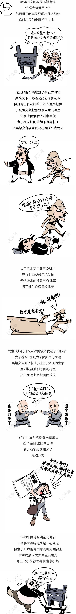
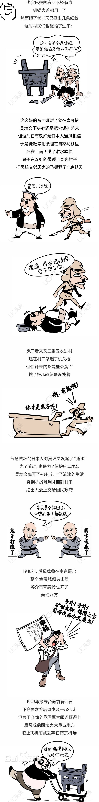

-
名称：杜虎符
年代：秦
出土：陕西省西安市南郊北沈家桥村
现存：陕西历史博物馆
- 基本信息
- 作走形。正面突起如浮雕，背面有槽。虎身有错金铭文九行四十字。符是古代朝廷用于传达命令、调动军队的一种特殊凭证。通常作虎形，分为左右两半，右半符留在京师，左半符颁发给屯驻在外的军队。需调兵时，由朝廷使者持右半符前往，军队长官将右半符与左半符验合后，军队即按使者传达的命令行动。此符铸于秦惠文君称王前，掌握在杜地的军事长官手中。
- 文物详解
- 虎符上有错金铭文9行40字：“兵甲之符。右才(在)君，左在杜。凡兴士被甲，用兵五十人以上，必会君符，乃敢行之。燔燧之事，虽母(毋)会符，行殴(也)。”虎符“右在君，左在杜”，意思是说右半符存君王之处，左半符在杜地的军事长官手中，凡要调动军队五十人以上，杜地的左符就要与君王的右符会合，才能行军令。但遇有紧急情况，可以点燃烽火，不必会君王的右符。器物铭文是在虎身镂刻阴文，再将金丝嵌入阴文之内，最后镂平打磨光亮，虽历经两千多年，仍熠熠闪光。字体绝大部分是小篆，规整挺秀。
符是中国古代朝廷传达命令、征调兵将以及用于各项事务的一种凭证。用金、银、玉、角、竹、木、铅等不同原料制成，用时双方各执一半，合之以验真假。这件杜虎符便是现存最早的一件调兵凭证，一符剖为左右两半，右边留存于朝廷，左半交地方官吏或统兵将帅保管，使用时两半相合，即为“符合”，表示命令验证可信。
虎符作为中国历史上调兵遣将的凭证起源很早，信陵君“窃符救赵”的故事说明至少在战国时期虎符已经行用。而且从记载可知战国时期各国君主为把持军权都实行了类似的制度。
- 景点信息
-
地址：陕西省西安市雁塔区小寨东路91号
开放：8：30-18：00（16：30停止发票）
交通：公共交通
- 景点位置
-
与必游景点的距离
华山： 约108.7公里
秦始皇帝陵兵马俑博物院： 约34.8公里
大雁塔： 约1.1公里
与附近其他景点的距离
陕西省博物馆： 约37米
秦王宫： 约624米

<


 
